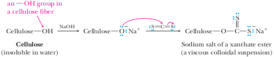

Polysaccharides
Polysaccharides, also known as glycans, consist of large numbers of monosaccharide units bonded together by glycosidic bonds.
Polysaccharides that are polymers of a single monosaccharide are called homopolysaccharides; those made up of more than one type of monosaccharide are called heteropolysaccharides. Homopolysaccharides are also classified on the basis of their monosaccharide units. A homopolysaccharide consisting of glucose monomeric units is called a glucan; one consisting of galactose units is a galactan, and so on.
Three important polysaccharides, all made up of glucose units (glucans), are starch, glycogen, and cellulose.
Starch: Amylose and Amylopectin
L'amido è composto da due polimeri:
amilosio (che ne costituisce circa il 20%)
amilopectina (circa l'80%)
Starch is used for energy storage in plants. It is found in all plant seeds and tubers and is the form in which glucose is stored for later use. Starch can be separated into two principal polysaccharides: amylose and amylopectin. Although the starch from each plant is unique, most starches contain 20–25% amylose and 75–80% amylopectin. Complete hydrolysis of both amylose and amylopectin yields only D-glucose. Amylose is composed of unbranched chains of up to 4000 D-glucose units joined by α-1,4-glycosidic bonds. Amylopectin contains chains up to 10,000 D-glucose units also joined by α-1,4-glycosidic bonds. In addition, there is considerable branching from this linear network. At branch points, new chains of 24 to 30 units are started by a-1,6-glycosidic bonds (Figure 25.4).
In entrambi i casi si tratta di polimeri del glucosio che si differenziano l'uno dall'altro per la struttura. L'amilosio è un polimero lineare che tende ad avvolgersi ad elica, in cui le unità di glucosio sono legate tra loro con legami glicosidici α(1→4) (tra il sito 1 di una unità e quello 4 dell'unità successiva). L'elica è costituita da 6 molecole di glucopiranosio (glucosio) per spira, stabilizzate da legami a idrogeno come nel DNA. L'amilopectina è invece un polimero ramificato che presenta catene di base di struttura simile all'amilosio che si dispongono a formare una struttura ramificata; ogni 24-30 unità di glucosio si innestano catene laterali attraverso legami α(1→6). L'amilopectina ha una struttura a grappolo costituita da segmenti di tipo A (15-20 unità di glucopiranosio) e catene di tipo B meno numerose. Sullo scheletro delle catene di Tipo B si insediano le catene di tipo A che costituiscono le ramificazioni. L'amilopectina è caratterizzata da strutture amorfe e strutture cristalline; le prime sono costituite di legami α(1→6), mentre le strutture cristalline danno origine a tratti di doppia elica. L'amilopectina è disposta radialmente con le estremità riducenti in prossimità del centro dei granuli di amido.
Una molecola di amilosio può contenere sino a 1000 residui di glucosio. L'amilosio lega insieme la struttura più espansa dell'amilopectina.
Biosintesi e funzione
L'amido è il carboidrato di riserva delle piante, immagazzinato come fonte energetica, sintetizzato per via enzimatica a partire dal glucosio, a sua volta prodotto dalla fotosintesi clorofilliana
6 CO2 + 6 H2O + luce → C6H12O6 + 6 O2
n C6H12O6 + enzima → H—(C6H10O5)n—OH + n−1 H2O
La formazione dell'amido, cioè l'unione dell'amilosio e dell'amilopectina, è catalizzata da un enzima chiamato amido sintetasi. L'ingestione degli alimenti contenenti amido provoca un innalzamento di glucosio nel sangue, al pari di ogni altro carboidrato.
Glycogen
Glycogen is the energy-reserve carbohydrate for animals. Like amylopectin, glycogen is a branched polysaccharide of approximately 10 6 glucose units joined by α-1,4- and α-1,6-glycosidic bonds. The total amount of glycogen in the body of a well-nourished adult human is about 350 g, divided almost equally between liver and muscle.
Cellulose
Cellulose, the most widely distributed plant skeletal polysaccharide, constitutes almost half of the cell wall material of wood. Cotton is almost pure cellulose. Cellulose is a linear polysaccharide of D-glucose units joined by β-1,4-glycosidicbonds (Figure 25.5). It has an average molecular weight of 400,000 g/mol, corresponding to approximately 2200 glucose units per molecule. Cellulose molecules act very much like stiff rods, a feature that enables them to align themselves side by side into well-organized water-insoluble fibers in which the OH groups form numerous intermolecular hydrogen bonds. This arrangement of parallel chains in bundles gives cellulose fibers their high mechanical strength. It is also the reason cellulose is insoluble in water. When a piece of cellulose-containing material is placed in water, there are not strong enough interactions with the water molecules on the surface of the fi ber to pull individual cellulose molecules away from the strongly hydrogen-bonded fiber. Humans and other animals cannot use cellulose as food because our digestive systems do not contain β-glucosidases, enzymes that catalyze hydrolysis of β-glucosidic bonds. Instead, we have only α-glucosidases; hence, the polysaccharides we use as sources of glucose are starch and glycogen. On the other hand, many bacteria and microorganisms do contain β-glucosidases and so can digest cellulose. Termites are fortunate (much to our regret) to have such bacteria in their guts and can use wood as their principal food. Ruminants (cud-chewing animals) and horses can also digest grasses and hay because β-glucosidase-containing microorganisms are present in their alimentary systems.
Cellulose nitrate
Chemists had been experimenting with the reactions between inorganic acids and organic materials for a number of years when in 1845, the Swiss chemist Christian Friedrich Schönbein invented cellulose nitrate alsoe called nitrocellulose by treating cotton (a cellulosic fiber) with a mixtute of nitric and sulfurin acids. Transformation of the cotton was dramatic as it appeared to have changed little but burned violently when brought near a flame. C.F. Schönbein. He also made several other contributions to chemistry, including the isolation of ozone.
By reacting cellulose (also known as dietary fiber) with a mixture of concentrated nitric and sulfuric acids, cellulose nitrate is formed:
It may be noted that although cellulose nitrate is very commonly referred to as nitrocellulose, this terminology is incorrect since nitro-compounds properly contain C—N bond.
Highly nitrated cellulose (with a nitration content of ca. 13%) is known as guncotton; it burns safaly in air, but if compressed blows up like an explosive, with the aid of a detonator.
A structure similar to that of c
The development of solvents and plasticizing agents for cellulose nitratra led to the production of many new useful nonexplosive products.
Celluloid
Nitrocellulose forms complexes with a variety of organic compounds such as camphor. Celluloid is a mixture of cellulose nitrate and camphor. Celluloid was once used to make many objects such as combs, dolls, and other such figurines. It is generally considered to be the first thermoplastic. Sincen the nitrocellulose which forms the best bond with camphor has one free hydroxyl per glucose group and since the composition of complete complex formation is one camphor molecule per glucose unit, it seems probable that the complex is formed by hydrogen bonding, between the two groups. Camphor eliminates the explosive properties, but leaves the product very inflammable. Celluloid for use in photographic films has a much lower camphor content.
With the ubiquitous use of synthetic plastics today, the use of celluloid as a plastic has been essentially phased out. But celluloid is still used to make ping pong balls and guitar picks. Be careful, though. If you attempt to buy guitar picks as a source of cellulose nitrate for burning, make certain they are made of celluloid. This is because the celluloid in guitar picks has begun to be replaced by different plastics. Indeed, recent patent reports how to make celluloid-free ping pong balls that are not as flammable as the celluloid-type. As a result, you might want to stock up on ping pong balls if you plan on using them in your chemistry classroom for some time to come!
Textile Fibers from Cellulose
Cotton is almost pure cellulose. Both rayon and acetate rayon are made from chemically modifi ed cellulose and were the first commercially important synthetic textile fibers. In the production of rayon, cellulose-containing materials are treated with carbon disulfide, CS2, in aqueous sodium hydroxide. In this reaction, some of the −OH groups on a cellulose fiber are converted to the sodium salts of a xanthate ester, which causes the fibers to dissolve in alkali as a viscous colloidal dispersion.
The solution of cellulose xanthate is separated from the alkali insoluble parts of wood and then forced through a spinneret, a metal disc with many tiny holes, into dilute sulfuric acid to hydrolyze the xanthate ester groups and precipitate regenerated cellulose. Regenerated cellulose extruded as a filament is called viscose rayon thread. In the industrial synthesis of acetate rayon, cellulose is treated with acetic anhydride.
Acetylated cellulose is then dissolved in a suitable solvent, precipitated, and drawn into fibers known as acetate rayon. Today, acetate rayon fibers rank fourth in production in the United States, surpassed only by Dacron polyester, nylon, and rayon.
A structure similar to that of cellulose is found in chitin (Gr. χιτών = tunic), a skeleton-building polysaccharide containin N−acetylglucosamine (instead of D−glucose) as monomeric units. Chitin shapes the exoskeletons of arthropods, mollusk, brachiopods, and bryozoan, as well as the cell walls of fungi.
Cellulose acetate
Cellulose acetate is the acetate ester of cellulose: Cellulose in which some or all of the hydroxyl groups have been acetylated. Industrially this is performed with a mixed acetic acid, acetic anhydride and sulphuric acid reagent to yield a solution (dope) of cellulose triacetate. It was first prepared in 1865. Cellulose acetate is used as a film base in photography, as a component in some coatings, and as a frame material for eyeglasses; it is also used as a synthetic fiber in the manufacture of cigarette filters and playing cards. In photographic film, cellulose acetate replaced nitrate film in the 1950s, being far less flammable and cheaper to produce.